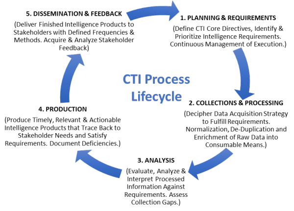
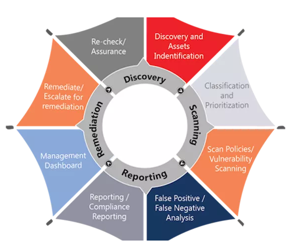
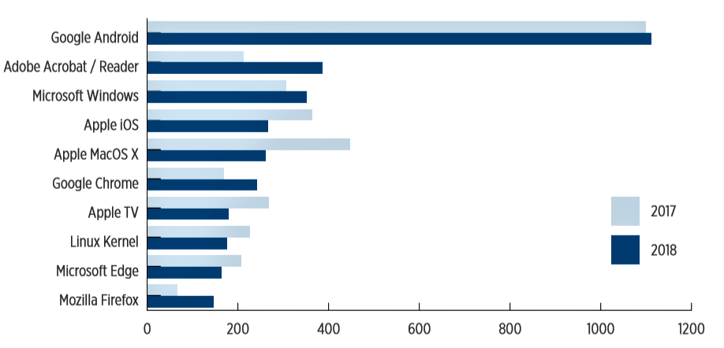
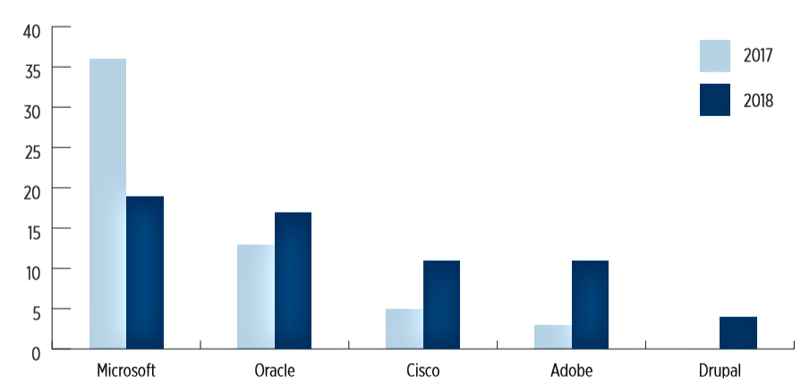
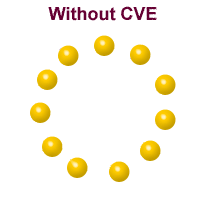

PROJECTATHON
Vulnerability Management & Threat Intelligence
THREATS
What is Threat?
A potential cause of an incident that may result in harm to a system or organization Example: In a system that allows weak passwords
- Threat:An intruder can exploit the password weakness to break into the system
- Threat Agent:Entities that would knowingly seek to manifest a threat
Who is the enemy? Why do they do it?
Offenders:
- Crackers
- Information System's Criminals
- Vandals
Who is the enemy? Why do they do it?
Components of threat:
- Threat Agents
- Capability
- Threat inhibitors
- Threat Catalysts
- Threat Amplifiers
- Threat Agent Motivators
Threat Agents types:
- Natural:fire, floods, power failure, earth quakes, etc.
- Unintentional:insider, outsider---primarily non-hostile
- Intentional:Insider, outsider---hostile or non-hostile (curious): Foreign agents, industrial espionage, terrorists, organized crime, hackers and crackers,insiders, political dissidents, vendors and suppliers
Top Database Security Threats:
- Excessive Privilege Abuse
- Legitimate Privilege Abuse
- SQL Injection
Top Web Threats:
- Old Browsers, Vulnerable Plugins
- Good Sites Hosting Bad Content
- Mobile Apps And The Unsecured Web
Real world examples:
-
Suspect IP:
- Collected from global blacklist?
- One time use?
- Bad data?,date and time?
-
What you are NOT capturing:
- Downloader Trojan detected and removed
- Other undetected variants?
- What does it download?What campaign?
Life cycle of Threat intelligence
BEST PRACTICES IN THREAT INTELLIGENCE
- Understand your gap
- Take advantage of new technology
- Hire a diverse cyber defense team
- Cultivate source networks

VULNERABILITY
- Vulnerability is a cyber-security term that refers to a flaw in a system that can leave it open to attack.
- A vulnerability may also refer to any type of weaknes in a computer system itself, in a set of procedures, or in anything that leaves informationsecurity exposed to a threat.
Vulnerability Management
Need for vulnerability management
- The number of cyber attacks are increasing.
- Hackers are finding new ways to access the internal corporate networks and systems.
- These are the backdoors that give direct access to attackers that cannot be solved by simple security measures like firewall.
Various cyber attack instances
- Equifax cyber attack in July 2017.
- Alteryx data leak exposed 123 million households.
- South Korea- in January 2014 data from 100 million credit cards had been stolen.
- Adobe Cyber attack 2013- atleast 38million accounts breached.
- Yahoo hacked in 2014- 3 billion yahoo acounts affected.
Vulnerability Management Process
Steps in Vulnerability Management Process
- Identifying Vulnerabilities
- Evaluating Vulnerabilities
- Reporting vulnerabilities
-
Treating Vulnerabilities
- Remediation
- Mitigation
- Acceptance
Top 10 Most Vulnerable Products
Most Exploited Vendors
Common Vulnerabilities and Exposures (CVE®) is a list of common identifiers for publicly known cybersecurity vulnerabilities.
CVE Entries are used in numerous cybersecurity products and services from around the world, including the U.S. NVD.
NVD
- The NVD is the U.S. government repository of standards based vulnerability management data represented using the Security Content Automation Protocol (SCAP)
- This data enables automation of vulnerability management, security measurement, and compliance
- The NVD includes databases of security checklist references, security related software flaws, misconfigurations, product names, and impact metrics
CVSS Severity Distribution Over Time
The Common Vulnerability Scoring System (CVSS) is an open framework for communicating the characteristics and severity of software vulnerabilities.
- Vulnerabilities are labeled Low severity if they have a CVSS base score of 0.0-3.9
- Vulnerabilities will be labeled Medium severity if they have a base CVSS score of 4.0-6.9
- Vulnerabilities will be labeled High severity if they have a CVSS base score of 7.0-10.0
Security Content Automation Protocol is a super standard which provides a standardized approach to maintaining the security of enterprise systems, such as
- automatically verifying the presence of patches
- checking system security configuration settings
- examining systems for signs of compromise
The Components of SCAP
- CVE (Common Vulnerabilities and Exposures)
- Enumeration of software vulnerabilities
- CCE (Common Configuration Enumeration)
- Enumeration of configurable controls of software
- CPE (Common Platform Enumeration)
- Enumeration of identities of software/hardware entities
- CVSS (Common Vulnerability Scoring System)
- Metric used to assign a severity score to vulnerabilities entries
- XCCDF (eXtensible Configuration Checklist Description Format)
- Language for encapsulating structure and content of security guidance
- OVAL (Open Vulnerability and Assessment Language)
- Language to describe tests against system state
- OCIL (Open Checklist Interactive Language)
- Language for user questionnaires
Questions?

a presentation by
- Shriharsha M
- Sushant Kumar Srivastava
- Likitha D T
- Rahul Kumar